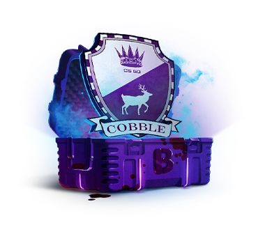

Otevři Cobblestone case a vyhraj vzácné skiny!
O nás
TripliX Case Opening je webová stránka, která vám umožňuje otevírat virtuální bedny s možností získání vzácných skinů do hry Counter-Strike 2. Vše je spravedlivé a transparentní!


TripliX Case Opening je webová stránka, která vám umožňuje otevírat virtuální bedny s možností získání vzácných skinů do hry Counter-Strike 2. Vše je spravedlivé a transparentní!